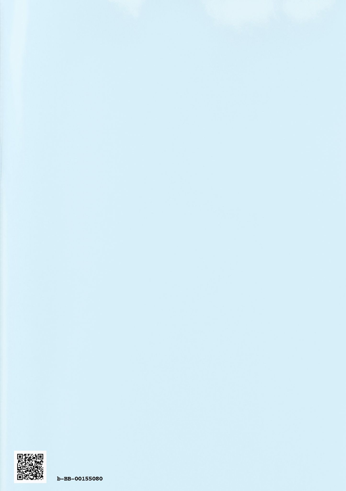

| 電子雑誌をつくろう！ vol.3 (勉強カフェ 電子雑誌制作委員会) | |
| 勉強カフェ 電子雑誌制作委員会 & 和良拓馬 & 末野美文 & みねろっく | |
| 勉強カフェ 電子雑誌制作委員会 (2018) | |
３時間という短い時間で、集い、原稿を持ち寄り、校正を行い、レイアウトを組み立て、雑誌をつくってみました！
本誌は18年６月16日に、勉強カフェ・横浜関内スタジオで開催されたイベント「電子雑誌をつくろう」にて、実際に制作されたものです。「私の生活に欠かせないモノ」をテーマに、３本のそれぞれ特色が異なるエッセイを収録！
ぜひ次回開催もお楽しみに下さい！？
【掲載記事】
●末野美文 私の「HEART STATION」 ―離れずに、暖めて―
部屋の中で、外出中、常に耳に届くもの。それは、暖かな「STATION」でした。
●みねろっく トロンボーンという楽器
５分で読める！ みねろっくのトロンボーンミニ雑学
●和良拓馬 日記帳とクローバー
日記帳に貼りつけた思い出の品とは？
この本はBCCKSで発行された
『電子雑誌をつくろう！ vol.3』
著 者：勉強カフェ 電子雑誌制作委員会
発 行：勉強カフェ 電子雑誌制作委員会
のEPUB版です。
EPUB版は、BCCKSの紙面とレイアウトや表示が異なります。
BCCKS版の閲覧は、以下のURLをご覧ください。
http://bccks.jp/bcck/155080/info
Powered byBCCKS
３時間という短い時間で、集い、原稿を持ち寄り、校正を行い、レイアウトを組み立て、雑誌をつくってみました！
今回のテーマは「私の生活に欠かせないモノ」です。
この度は本誌を手に取って下さり、誠にありがとうございます。
本誌は株式会社ブックマークスが運営する、勉強カフェ・横浜関内スタジオにて開催されたイベント「電子雑誌をつくろう！」内にて制作及び出版された一冊です。
また、当イベントの理念及びレギュレーションをこちらに掲載致します。「自分も電子雑誌をつくってみよう！」というご参考、そして後押しになれば幸いです。
◆イベントの理念
みんなで「電子雑誌」をつくって、新しいアウトプット＆
読書体験を楽しもう！
ブログやＳＮＳの発達により、情報を発信することを「楽しい」と感じる人が増えています。また、「いつかは自分の文章・作品を本にしてみたい！」という憧れを抱いている人も少なくないのでは？
というわけで、皆様に新しい「出版」の場をご用意します。
そう、「電子雑誌」をつくってみませんか？
みんなで原稿を持ち寄り、文章やレイアウトに手直しを加え、最後は自分のスマホや端末で読む。
そんな新しいアウトプット＆
読書体験が楽しめるイベントです。
◆参加概要
・開催日：２０１８年６月16
日 14
時～17
時
・参加者の皆さまには、開催日までに１２００文字以下（原稿用紙３枚以内）の原稿＋４００文字程度の自己紹介文を持ち寄っていただきます（※開催日前にワード形式でお送りいただけると、なお可です）。
・作品のジャンルは何でも構いません（小説、詩、ノンフィクション、エッセイ、評論、etc.）。また、マンガ、写真集を希望される方は事前にご相談ください（ページ数が分かるとより助かります）。ただし、残虐な描写、性的感情を刺激する行為の直接的表現、個人や組織に対する攻撃を記したものにつきましては、表現の修正および掲載の見送りを求める場合がございますので、予めご了承ください。
・今回のテーマは「私の生活に欠かせないモノ」です。大切にしているモノに関する記事をお送り下さい。
・掲載作品のすべての著作権は著者自身に帰属します。また掲載後にご自身の作品をどう扱うかについては、ご自身で決めていただいて構いません。
・本誌は０円で各種電子書籍ストア（Kindleストア、楽天Kobo、BOOK☆
WALKERなど）にて配布する予定です。
帰宅したらまずＴＶをつける。スマホ全盛の今、そうした人は少ないのかもしれないが、私の場合、昔からまずつけるのはラジオだ。
私のラジオとの付き合いはかなり古い。毎朝ラジオを聴きながら朝食をとる習慣の家庭で育ち、「みんなのうた」を聴きながら、「"北風小僧の寒太郎"......冬だなあ」と季節を感じる小学生だった。なかなか渋い（そう、我が家で流れていた定番局はＮＨＫでした。ちなみに知らない人もいるかもしれませんが「みんなのうた」は、ラジオでも放送されています）。
自分から主体的に聴き始めたのは中学生の頃。雑誌で広告を見たラジオ番組を聴いてみたいと思ったのがきっかけだった。当時のラジオＤＪというのが、大江千里・岡村孝子・山下達郎などなど。今考えると相当な大御所が揃っていたのだからラジオ恐るべし。
その頃、私はあるバンドのファンになり、さらにラジオにのめり込むことになる。３人組のバンドで、そのボーカルがＤＪを担当していた番組を偶然耳にし、トークの面白さと、同一人物とは思えない歌の上手さで（失礼......）、気付けばヘビーリスナーに。旅行で番組を聴けない時には、（彼らのファンではない）友人に録音してもらってまで聴いていたのだから、周囲もあきれるほどのハマり具合だったと思う。
高校生になるとさらに夜中のＦＭラジオが勉強の友となり、部屋に常にラジオが流れる日々が続く。高校卒業後に始めたバイト先もラジオがかかっている職場だったことから、私の"ラジオ漬け"な日々は変わらなかった。
しかし社会人になると、毎日就業時間の異なるシフト制の仕事に就いたこともあり、ラジオを聴く時間が取れなくなってしまった。その寂しさを埋めるようにＣＤで音楽を聴く時間が増えたため"何かを聴く"という時間は変わらなかったのだが。
再びラジオを聴き始めるようになった原因は、実は東日本大震災だった。震災後、私の頭の中からあるイメージが離れなくなってしまったのだ。災害のあと、破壊しつくされた世界の中で、がれきの中から壊れたＣＤプレイヤーがなぜか狂ったように音楽を流し続けるという風景。聴く人のいない中、ひたすら音楽だけが流れるさまがあまりにも寂しく、ＣＤなどを聴くのが恐ろしく思えてならなかった。
その恐ろしさを和らげてくれたもの。それがラジオだった。
ラジオから流れてくるのは、音楽も含めてリスナーへのメッセージで、そこに"誰か"がいること、そして"私"がここにいることを、肯定してくれている。某ヒットソングではないけれど「心の電波」が届く。そんな気がしている。
今はＣＤを聴くことに恐ろしさはない。またラジオから離れる日が来るのかもしれないが、多分何度でも戻ってくると思う。なぜなら今日もまた、私のスマホからはラジオが流れているのだから。形は変わっても私の「HEART STATION」は、ここにある。
皆さんはトロンボーンという楽器をご存知ですか？？
この質問をすると、少しでもこの楽器を見た記憶がある方は「ラッパの大きいやつ！」とか、腕を伸ばしたり縮めたりするジェスチャーをしながら、「こういう楽器でしょ？」と答えてくれます。
そうです。正解です。そんな感じの楽器を、私はかれこれ人生の半分以上演奏してきました。私はそろそろ30
歳になるということで、トロンボーンという楽器を吹き続けて15
年くらいはたつということになります。
15
年以上もずっとこの楽器を吹き続けているという事は、もう人生の一部、身体の一部、無くてはならないものと言っても良いのではないかと思っています。今回はそんな自分の人生の一部である、トロンボーンという楽器の歴史や成り立ちなどを、少しだけ伝えたいと思います。
この文章を読んだ後に、皆さんがトロンボーンという楽器について、「興味をもった！！」「いつか吹いてみたい！！」とまでは言わなくても、「ふーん。トロンボーンってそんな楽器なんだね」程度に覚えて頂けたら幸いです。
・名前の由来
まずは名前。トロンボーン＝Trombone と書きます。もともとはイタリア語で、Tromba=「ラッパ」という言葉があり、意味は「ラッパの大きいもの」となります。
ちなみに、トランペットはTrumpetと書き、意味は「ラッパの小さいもの」です。
・値段
楽器と聞けばやはり気になるのはお値段。はい。やはりお手頃ではありません。
安いものでも20
万円以上、高いものだと１００万円を超えるものもあり、ドイツやアメリカの職人さんが一本一本手作りのものはなんと「時価」なんて書いてあるものもあります！
しかし弦楽器に比べたら......お手頃価格とも言えなくもないでしょうか。
・種類
トロンボーンはトロンボーンじゃないの？ という意見が出てきそうですが、高校野球の応援などで皆さんが見たことがあるあの楽器、実は正式な名称があるんです。その名も「テナーバストロンボーン」。この楽器以外にも、大きさや音域によって名称が変わってきます。「アルトトロンボーン」「テナートロンボーン」「バストロンボーン」などなど。
ちなみに私は、特に地味な「バストロンボーン」を演奏していました。理由は、「あんまり吹いている人いないし、競争相手もいないから上手くなれば仕事になりやすいよ～」という私の師匠の甘い言葉に誘われたからです（笑）。
・トロンボーンの歴史
トロンボーンの原型は15
世紀には完成したと言われています。15
世紀は日本でいうところの室町時代。足利尊氏の命令でお寺に金を塗っている頃、ヨーロッパでは楽器に金を塗りだしたのですねー。
楽器が出来た当初は、貴族の宮廷、教会、あるいは軍楽隊など様々な場所で使われていたのですが、18
世紀に入ると活躍の場所が教会などの宗教的な場に移ります。理由は諸説ありますが、人の声（男性の声）に音域が近く音質も似ていることから男性パートの増強に使われたんだとか。
これ以上書くと私のトロンボーン愛があふれてきてしまうので以上で終わりにします。
もし、興味を持っていただけたなら幸いです。
３年前、僕は日記を書く習慣を始めた。夜に喫茶店に立ち寄り、そこでコーヒーを飲みながら、淡々と日々の出来事を書く。それが仕事終わりのルーティーンになった。
去年まではとある１日１ページタイプの手帳を用いていた。だが、仕事内容が大幅に変わりスケジュール管理が煩雑になったため、使いにくさを感じるようになった。
そこで、「スケジュール管理用の手帳」と「日記帳としての手帳」の２つに思い切って分けることにした。前者はエイ出版社の「ＥＳダイアリー １月始まり Ａ６ バーチカル」を、後者は無印良品の「上質紙１日１ページノート 文庫本サイズ」を使用している。カバンの中に２つの手帳が入っていることもしばしば。
前者はパブリックなノートで、後者はプライベートのノート。この２冊に役割を与えれば、こう言い表すことができる。
「ＥＳダイアリー」は極めて標準的な手帳の使い方をしている一方、「１日１ページノート」はとてもフリーダムだ。もちろん日記帳として使っているが、ネタに乏しいときや書き忘れたときは「貼る」行為を繰り返している。気になった新聞や雑誌記事の切り抜き、プレゼントで貰ったステッカーやカード、チケットや外れた馬券......。特にルールは無い。
貼るものは紙類だけとは限らない。
ある日、洗濯をしようとワイシャツを整理していたら、胸ポケットから妙なものが出てきた。なんと四つ葉のクローバーだった。記憶を辿る。そういえば、このシャツを着たのは友人たちとカレーパーティーをしたときだった。会場近くに河川敷があって、そこで誰かがクローバーを摘んだという話をしていたような......。
自覚は無いのだが、そのクローバーを僕が持って帰ってしまったらしい。
とは言え、クローバーは相当しおれている。これはマズイ。洗濯を中断し、押し花の作り方を検索した。
しおれた葉を水で戻し、葉を広げる。形が整ったら、重し（僕の場合、大量の単行本）を載せて数日乾かす。クローバーに、生気が蘇った。
四つ葉のクローバーは今、ラミネートフィルムに包まれて、日記帳の片隅で咲いている。これからも良い思い出を、この日記帳に残していきたいところである。
◆末野美文
バブル時代が目の前で過ぎ去った、まさにロスジェネ世代ど真ん中40
代。
実はこんな文章を書きながら、帰宅後すぐにつけるのはＴＶのスイッチです。なぜなら家のＴＶでインターネットに接続し、radikoでラジオを聴いているから。ややこしい！ ちなみに私が中学時代にハマっていたバンドのヒントはサブタイトルにあります。というか、まんま彼らの曲のタイトルです。初めて自分でチケットを買ってコンサートに行ったのも彼らでした。中学生で彼らの良さに気付いた自分は、かなり音楽センスがいいのではないかと密かに自負しております。５時間のラジオ生番組をリアルタイムで聴き続けるとか、あの頃はほんとに若かった......。この文章を書いていたら久しぶりに昔の曲を聴きたくなり、スマホに落として聴いていたところ、某コンビニで彼らの曲が流れてきてびっくり。（あまりメジャーな所では曲が流れないバンドなのです）不思議なシンクロニシティでした。
◆みねろっく
日本の都道府県を有名な所から名前を挙げていったらおそらく40
番目以降に挙がるであろう田舎の県の県庁所在地、駅前生まれのシティーボーイ。
10
歳でトランペットをはじめ、14
歳でバストロンボーンに出会う。以降、中学・高校では吹奏楽でバストロンボーンを担当し、「せっかく練習してるならプロに習ってみたい」という安易な理由で、出身県にあるプロオーケストラのバストロンボーン奏者に弟子入りをし、大学では音楽を学び、日本の戦う音楽集団にバストロンボーン奏者として入団する。その後は......。
◆和良拓馬
１９８８年３月生まれ、神奈川県横浜市出身。大学時代にスポーツ新聞部に入部し、ラグビー部やサッカー部の番記者として活躍。大学卒業後はしがないサラリーマンを続ける傍ら、２０１４年11
月よりセルフパブリッシングをスタート。主な寄稿先は「月刊群雛（ＧｕｎＳｕ）」「ウマフリ」など。「インディ・スポーツライター」を（勝手に）自称し、人々がスポットライトを当てないスポーツの面白さや驚きを伝え、暖かく見守り続けていきます。
５月に新潟競馬場、そして６月はラグビー日本代表の応援で愛知県豊田市へ。２か月連続の遠征というのも、社会人になってからでは初めて。時間の余裕が増えたと捉えましょう！ 金は減り、疲れは溜まれど、夏に向けて旅行計画を立ててしまいたくなる今日この頃......。
さてさて、「電子雑誌をつくろう！」もライブパブリッシングイベントとして３回目を迎えました。少しずつやり方にも慣れてきて、雑誌の質も高まってきている実感があります。
ただ......今回は執筆者を集めるのに苦戦しました。過去２回は順調だったので、少し余裕を持ち過ぎたかもしれません。反省。
その一方で、今回は校正時間は短めにし、かわりに表紙の作成に時間をかけました。素材やカラーの選択など、「この作品に合う表紙って...？」というのを話し合うのも、なかなか楽しいものでした。いやー、本当に頑張りました（自画自賛）。
ということで、次回からはさらなる工夫を行います！ 「雑誌づくりを通して新しいアウトプット手法を学ぶ」という軸は変わらずに......
・会員以外の参加を許可する
・オフラインでの参加を容易にする
・企画や表紙と言った途中の工程も参加者に関われるようにする
......という点を検討して参ります。コツコツ頑張っていきますね。
２０１８年６月 「電子雑誌をつくろう！」編集長 和良拓馬
全てはここから始まった！ 本誌は勉強カフェ・横浜関内スタジオで開催されたイベント「電子雑誌をつくろう」にて、無事に創刊しました。イベント情報、自己啓発、ノウハウ、スポーツエッセイなど、読み応えのある記事５本を収録！
【掲載記事】
●末野美文 道へ出よ、ヨガをしよう？！ ―関内外ＯＰＥＮ！ パークフェス アウトドア・ヨガ体験―
●永井正敏 ピンチの時のオ・マ・ジ・ナ・イ？
●熊谷憲一 Make My Day Can Rich
●浅上えっそ 「漫画のキャラクターの作り方～もう迷わない３つのポイント～」
●和良拓馬 ガッツポーズ
https://bccks.jp/bcck/152262
３時間という短い時間で、集い、原稿を持ち寄り、校正を行い、レイアウトを組み立て、雑誌をつくってみました！ 今回は「習」をテーマに、旅行案内、イベントレポート、エッセイ、書評と、それぞれ特色が異なる記事４本を収録！
【掲載記事】
●七島志乃 三浦半島 日帰り学習観光
●和良拓馬 異なる役割から見えるもの ～NovelJam2018を振り返って～
●熊谷憲一 勉強カフェで習ったこと
●末野美文 原則の源にあるもの ―『七つの習慣』を読んで思うこと―
https://bccks.jp/bcck/153660/
2018年6月16日 発行 初版
bb_B_00155080
bcck:http://bccks.jp/bcck/00155080/info
user:http://bccks.jp/user/130566
format:#002t
Powered by BCCKS
株式会社BCCKS
〒
141-0021
東京都品川区上大崎 1-5-5 201
contact@bccks.jp
http://bccks.jp
